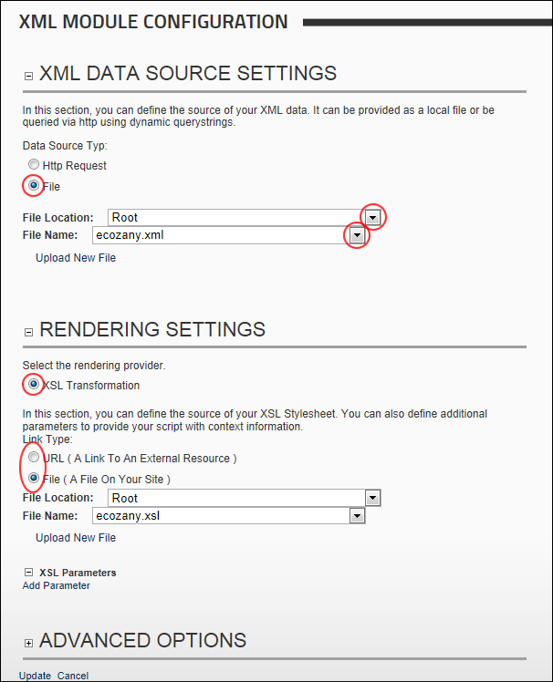

Creating a XML/XSL Transformation Using an Internal XML File
How to create an XML/XSL transformation using an XML file that has been uploaded to the Digital Asset Management module that is located on the Admin > File Management page. This tutorial uses the default settings that display the results as HTML inside the XML/XSL module. In the below example, both the XML and XSL files are located in the Digital Asset Management module that is located on the Admin > File Management page.
- Select
 Edit Module Configuration from the XML/XSL module actions menu.
Edit Module Configuration from the XML/XSL module actions menu.
- Maximize
 the XML Data Source Settings section.
the XML Data Source Settings section.
- At Data Source Typ, select File and then set the file link. See "Setting a File Link" or See "Uploading and Linking to a File"
- Go to the Rendering Settings section. The XSL Transformation radio button is selected by default.
- Set the link to the XSL file. See "Setting a URL Link", See "Setting a File Link" or See "Uploading and Linking to a File". Skip to Step 8 to use the default options and skip the optional settings.

- Optional. Maximize the XSL Parameters section to add XSL parameters. See "Managing XSL Parameters"
- Optional. Maximize the Advanced Options section and set any of these optional settings:
- Render the output as link to download (See "Setting XML/XSL Output as a Download Link") or set a direct download. See "Setting XML/XSL Output to Download"
- Set query string parameters. See "Setting Query String Parameter Value Pair"
- Include output in DNN site searches. See "Enabling/Disabling XML Search Indexing"
- Click the Update link.

The XML/XSL Transformation